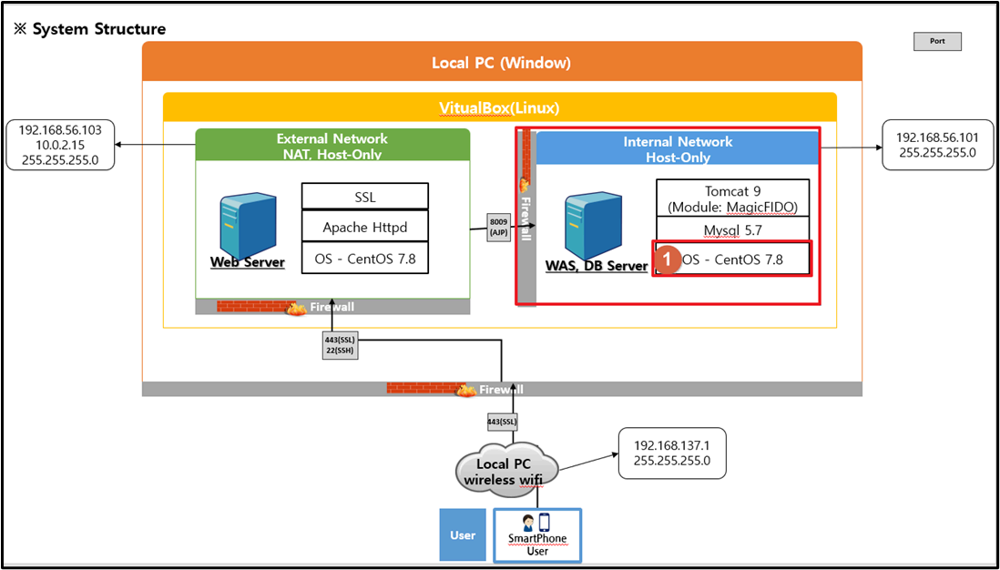
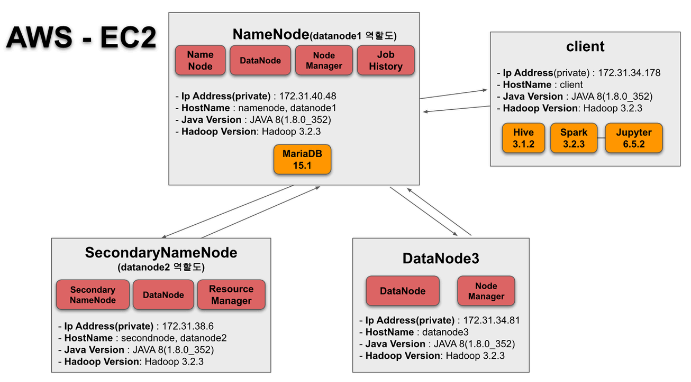

Selected projects
A few projects that reflect both my infrastructure background and my growing DevOps experience.

Kubernetes · Terraform · GitHub Actions
Cloud Native DevOps Pipeline
Built an end-to-end deployment workflow from source code to Kubernetes, including infrastructure provisioning, CI/CD, monitoring, and health checks.

Air-Gapped Environment
Secure Offline Infrastructure
Designed and operated a secure web infrastructure in a private network with Apache, Tomcat, MySQL, internal package management, and controlled access.

Hadoop · Hive · Spark
AWS Data Processing
Built a distributed data processing environment on AWS EC2 to understand cluster configuration, metadata integration, and interactive workflows.